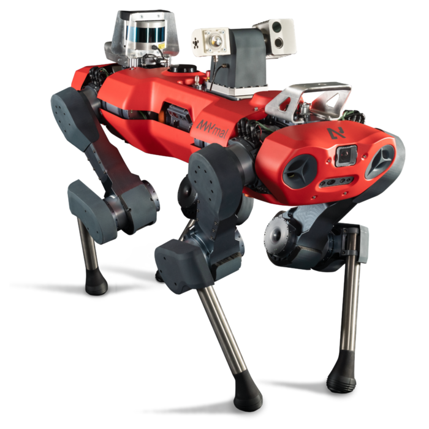

Robots de cuatro patas y cinturones inteligentes

Ayudan a las personas a superar las barreras cotidianas. En un mundo donde la tecnología avanza a pasos agigantados, los robots de cuatro patas se están convirtiendo en una herramienta esencial para ayudar a las personas con movilidad reducida. Ayudan a las personas a superar las barreras cotidianas. En un mundo donde la tecnología avanza a pasos agigantados, los robots de cuatro patas se están convirtiendo en una herramienta esencial para ayudar a las personas con movilidad reducida.Ayudan a las personas a superar las barreras cotidianas. En un mundo donde la tecnología avanza a pasos agigantados, los robots de cuatro patas se están convirtiendo en una herramienta esencial para ayudar a las personas con movilidad reducida. Descubre más aquí.
El robot AnyMal de ETH Zurich
AnyMal, desarrollado por el Instituto de Tecnología de Zurich (ETH Zurich), es un robot cuadrúpedo diseñado para operar en entornos complejos y desafiantes, imitando la movilidad de los animales para navegar eficientemente en terrenos irregulares y escaleras. Su versatilidad lo hace ideal para aplicaciones en inspección industrial, búsqueda y rescate, y monitoreo ambiental. Equipado con sensores avanzados, incluyendo cámaras y sensores de profundidad, AnyMal puede percibir su entorno en 3D, lo que le permite evitar obstáculos y planificar rutas. Utiliza algoritmos de inteligencia artificial para la toma de decisiones en tiempo real, operando de forma autónoma o bajo control remoto, lo que le otorga flexibilidad en diversas situaciones. Además, sirve como plataforma para la investigación en robótica y sistemas autónomos, permitiendo a los investigadores experimentar con nuevas técnicas de control y percepción, lo que lo convierte en una herramienta valiosa en múltiples industrias. Información.
Un pequeño convoy de robots

Los convoyes de robots para cirugía endoscópica representan un avance significativo en la medicina quirúrgica. Estos sistemas robóticos están diseñados para realizar procedimientos mínimamente invasivos con mayor precisión y control. Aquí te dejo algunos puntos clave sobre su funcionamiento y beneficios: Precisión y Control: Los robots permiten movimientos más precisos que los realizados por las manos humanas, lo que es crucial en procedimientos delicados. Visualización Mejorada: Muchos sistemas robóticos están equipados con cámaras de alta definición que proporcionan una vista ampliada del área quirúrgica, mejorando la visualización para el cirujano. Menos Invasividad: Al utilizar técnicas endoscópicas, se minimizan las incisiones, lo que reduce el tiempo de recuperación y el riesgo de complicaciones. Colaboración en Equipo: Los convoyes de robots pueden trabajar en conjunto con equipos de cirujanos y enfermeras, facilitando la coordinación y la comunicación durante la cirugía. Entrenamiento y Simulación: Algunos sistemas robóticos ofrecen simuladores para entrenar a los cirujanos en técnicas específicas, lo que puede mejorar la formación y la confianza antes de realizar procedimientos en pacientes. Aplicaciones: Se utilizan en una variedad de procedimientos, incluidos aquellos en gastroenterología, urología y cirugía general. Información.
Entrega de alimentos desde robots

La entrega de alimentos mediante robots es una tendencia en crecimiento que combina tecnología avanzada con soluciones logísticas innovadoras. Estos robots, que pueden ser autónomos o controlados de forma remota, están diseñados para transportar y entregar alimentos en entornos urbanos, campus universitarios y comunidades. Equipados con sensores y cámaras, pueden navegar de manera segura por calles y aceras, evitando obstáculos y personas. Además, suelen utilizar sistemas de localización y mapeo para garantizar entregas precisas. Algunos modelos cuentan con compartimentos de refrigeración para mantener la frescura de los alimentos durante el trayecto. Esta forma de entrega no solo mejora la eficiencia y reduce costos laborales, sino que también ofrece una opción más sostenible al disminuir la necesidad de vehículos motorizados para entregas. A medida que avanza la tecnología, se espera que estos robots se integren aún más en los servicios de entrega, proporcionando comodidad y rapidez a los consumidores. Información.
La "cura funcional" para la diabetes
La "cura funcional" para la diabetes también está vinculada a avances tecnológicos que están revolucionando el manejo de la enfermedad. Uno de los desarrollos más prometedores es el uso de dispositivos de monitoreo continuo de glucosa (CGM), que permiten a los pacientes medir sus niveles de azúcar en sangre en tiempo real. Estos dispositivos se integran con aplicaciones móviles que ofrecen análisis de datos y recomendaciones personalizadas. Además, los sistemas de insulina automática, como las bombas de insulina y los sistemas de páncreas artificial, están avanzando rápidamente. Estos sistemas pueden ajustar la liberación de insulina basada en los datos del CGM, lo que facilita un control más preciso de la glucosa sin necesidad de múltiples inyecciones diarias. Otra área emocionante es la investigación en bioimpresión 3D de tejidos pancreáticos, que podría permitir la creación de células beta funcionales para trasplantes. La inteligencia artificial también se está utilizando para predecir y gestionar fluctuaciones en los niveles de azúcar, lo que ayuda a personalizar tratamientos y mejorar la calidad de vida de los pacientes. Información.